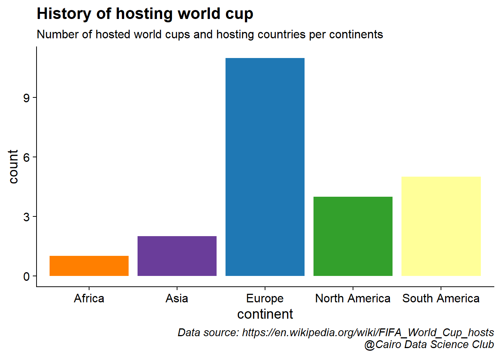
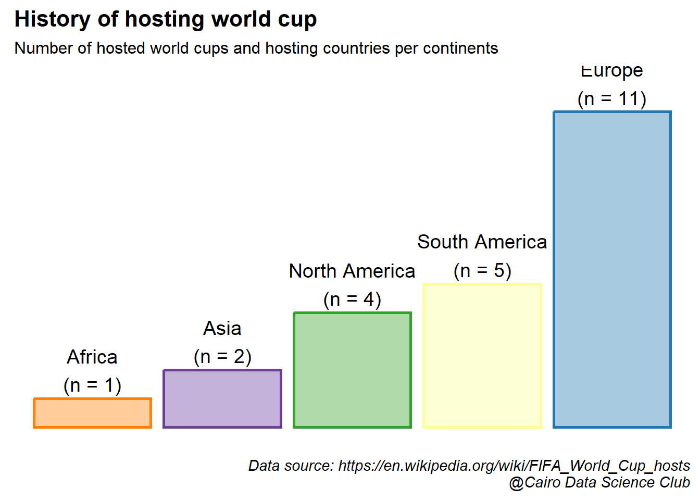
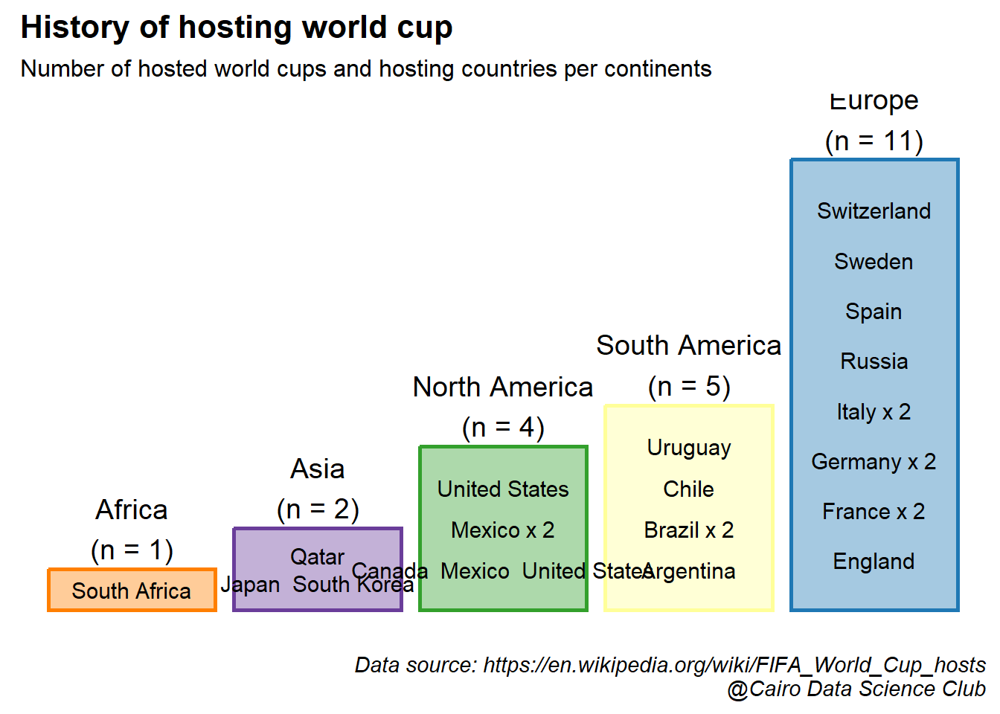

2.2 How many world cups were hosted in each continent?
Before embarking on our colorful journey of data visualization, let’s define a caption that credits the source of the data and the analysis.
caption_cdc <- glue::glue("Data source: {url}\n@Cairo Data Science Club")
theme_update(plot.caption = element_text(face = "italic"))We will exclude the dates in which the championship were cancelled because of Warld War II
df_host <- tbls_lst$list_of_hosts %>%
filter(!str_detect(continent, "Canceled"))Let’s look at a basic plot of the data
df_host %>%
ggplot(aes(continent))+
geom_bar()
This doesn’t look pretty. Let’s make it more attractive! First, let’s add a some colors.
#Assign colors to each continent
conti_cols <- c(Europe = "#1f78b4",
Asia = "#6a3d9a",
`South America` = "#ffff99",
`North America` = "#33a02c",
Africa = "#ff7f00")
#show colors in the plot
df_host %>%
ggplot(aes(continent, fill = continent))+
geom_bar()+
scale_color_manual(values = conti_cols)+
scale_fill_manual(values = conti_cols)
Second, let’s add some text and remove the legend since it doesn’t add to the plot.
df_host %>%
ggplot(aes(continent, fill = continent))+
geom_bar(show.legend = FALSE)+
scale_color_manual(values = conti_cols)+
scale_fill_manual(values = conti_cols)+
labs(title = "History of hosting world cup",
subtitle = "Number of hosted world cups and hosting countries per continents",
caption = caption_cdc)
Next, I think we can get rid off the axis and label each bar with important information.
df_host %>%
group_by(continent) %>%
summarise(n = n())%>%
ungroup() %>%
arrange(n) %>%
mutate(continent = factor(continent, levels = unique(continent))) %>%
ggplot(aes(continent, n))+
geom_col(aes(color = continent), fill = "white", show.legend = FALSE, linewidth = 1)+
geom_col(aes(fill = continent), alpha = 0.4, show.legend = FALSE)+
geom_text(data = . %>%
mutate(cont_n = glue::glue("{continent}\n(n = {n})")),
aes(label = cont_n), size = 5,nudge_y = 1)+
labs(title = "History of hosting world cup",
subtitle = "Number of hosted world cups and hosting countries per continents")+
scale_color_manual(values = conti_cols)+
scale_fill_manual(values = conti_cols)+
theme(axis.line = element_blank(),
axis.ticks = element_blank(),
axis.text = element_blank(),
axis.title = element_blank())
Finally, we’ll squeeze the names of the hosting countries inside the bars of the corresponding continent
df_host %>%
group_by(continent) %>%
summarise(n = n())%>%
ungroup() %>%
arrange(n) %>%
mutate(continent = factor(continent, levels = unique(continent))) %>%
ggplot(aes(continent, n))+
geom_col(aes(color = continent), fill = "white", show.legend = FALSE, linewidth = 1)+
geom_col(aes(fill = continent), alpha = 0.4, show.legend = FALSE)+
geom_text(data = . %>%
mutate(cont_n = glue::glue("{continent}\n(n = {n})")),
aes(label = cont_n), size = 5,nudge_y = 1)+
geom_text(data = df_host %>%
group_by(continent, host_nation_s) %>%
summarise(n_host = n()) %>%
group_by(continent) %>%
mutate(n_cont = n(),
prop = sum(n_host)/(n_cont+1),
cum_prop = cumsum(prop))%>%
ungroup() %>%
mutate(host_nation_s = ifelse(n_host >1 , glue::glue("{host_nation_s} x {n_host}"), host_nation_s)),
aes(y = cum_prop, label = host_nation_s),
size = 4
)+
labs(title = "History of hosting world cup",
subtitle = "Number of hosted world cups and hosting countries per continents",
caption = caption_cdc)+
scale_color_manual(values = conti_cols)+
scale_fill_manual(values = conti_cols)+
theme(axis.line = element_blank(),
axis.ticks = element_blank(),
axis.text = element_blank(),
axis.title = element_blank())## `summarise()` has grouped output by 'continent'. You can override using the
## `.groups` argument.